Part 1 builds convolution from scratch and uses it to find edges. Part 2 splits images into low and
high frequencies and puts them back together in different ways: sharpening, hybrid images, and
multiresolution blending.
PART 1 · 1.1
Convolutions from scratch
A convolution slides a kernel over the image and at every pixel takes the sum of the kernel times the
patch under it. The kernel gets flipped first (both axes), which is the difference between convolution and
cross correlation. I wrote it twice with numpy only: once with four loops, once with two loops where the
inner two loops become one elementwise multiply and sum.
For the boundary I zero pad by kh//2 rows and kw//2 columns on each side, so
the output is the same size as the input. That matches scipy.signal.convolve2d(..., mode='same'),
which also fills with zeros by default.
# four loopsdef convolve_four_loops(img, kernel):
kh, kw = kernel.shape
img = np.pad(img, ((kh//2, kh//2), (kw//2, kw//2))) # zero fill, "same" size
x, y = img.shape
out = np.zeros((x-kh+1, y-kw+1))
kernel = np.flip(kernel) # flip both axesfor i in range(x-kh+1):
for j in range(y-kw+1):
total = 0
for u in range(kh):
for v in range(kw):
total += img[i+u][j+v] * kernel[u][v]
out[i][j] = total
return out
# two loops: the inner window becomes one numpy multiply + sumdef convolve(img, kernel):
kh, kw = kernel.shape
img = np.pad(img, ((kh//2, kh//2), (kw//2, kw//2)))
x, y = img.shape
out = np.zeros((x-kh+1, y-kw+1))
kernel = np.flip(kernel)
for i in range(x-kh+1):
for j in range(y-kw+1):
patch = img[i:i+kh, j:j+kw]
out[i][j] = (patch * kernel).sum()
return out
Dx = np.array([[1, 0, -1]])
Dy = Dx.T
Box = np.ones((9, 9)) / 81 # 9x9 box that sums to 1
Runtime and correctness
9x9 box filter on the 542 × 540 cameraman. The error column is the L2 norm of the difference from
convolve2d, so all three give the same answer up to floating point.
Method
Time
‖mine − scipy‖
Four loops
8.00 s
1.6e−13
Two loops
0.49 s
6.1e−14
scipy convolve2d
0.04 s
n/a
Four loops is about 16x slower than two loops, since every multiply goes through the Python interpreter.
Two loops pushes the 81 multiplies per pixel into numpy, and scipy is another 12x faster because the
whole thing runs in compiled code. On my 1514 × 1144 selfie the two loop version takes about 3.6 s, which
is why the four loop timing is done on the smaller cameraman.
On my selfie (grayscale)
OriginalRead with as_gray=True.
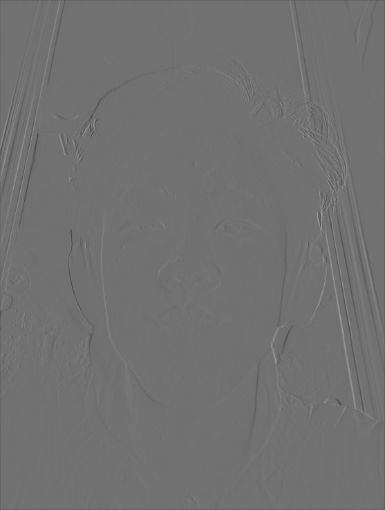
* Dx (mine)Lights up vertical edges, like the door frame and the sides of my face.
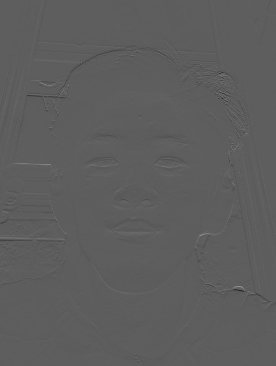
* Dy (mine)Lights up horizontal edges, like the headphone band and my eyebrows.
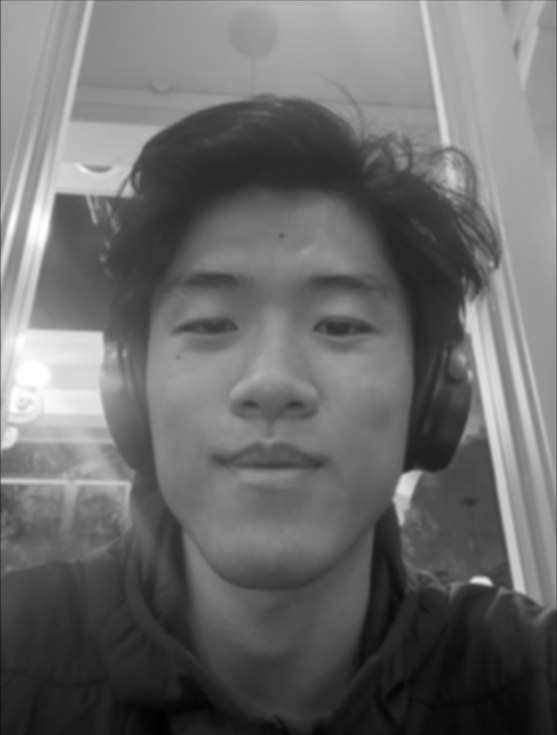
Minescipy
9x9 box, mine vs scipy (drag)No visible seam, since they're the same image. Both darken slightly at the very edge because the zero padding gets averaged in.PART 1 · 1.2
Finite difference operator
Convolving with Dx = [1, 0, −1] and Dy = Dxᵀ gives the partial derivatives.
The gradient magnitude combines the two into one number per pixel that says how fast brightness is
changing, regardless of direction.
‖∇I‖ = √( (I * Dx)² + (I * Dy)² )
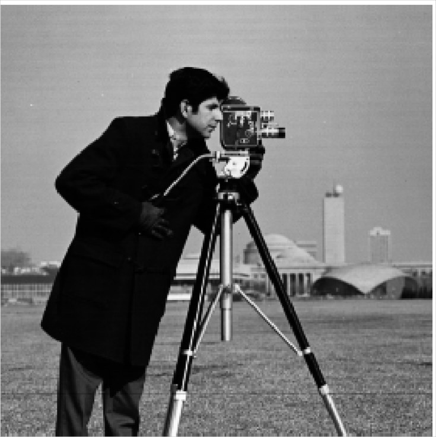
Original
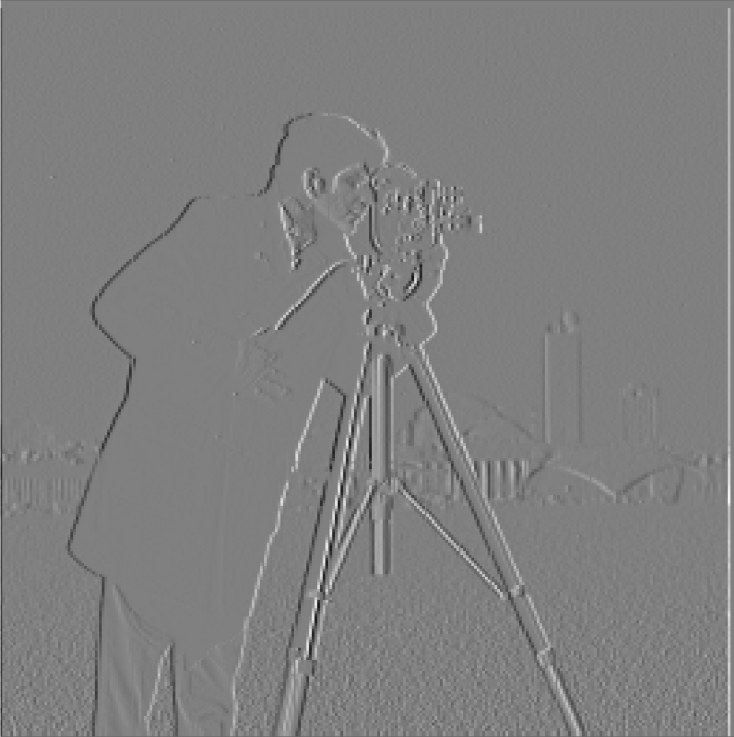
∂I/∂x
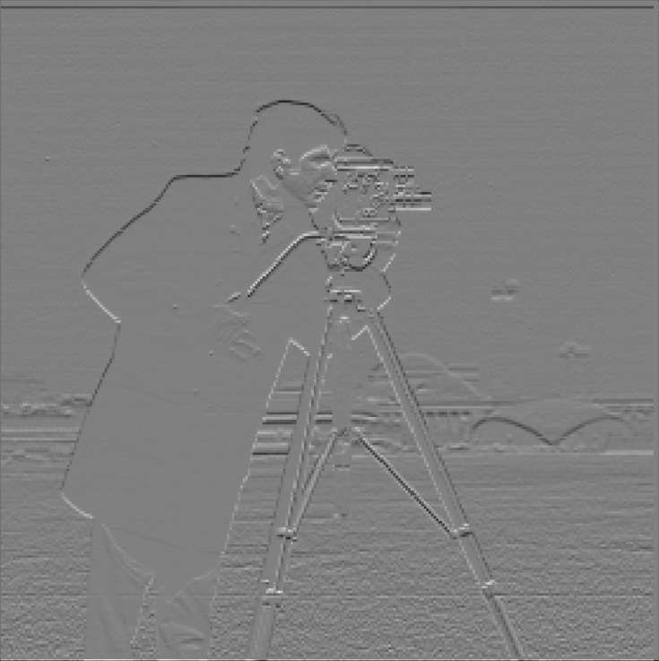
∂I/∂y
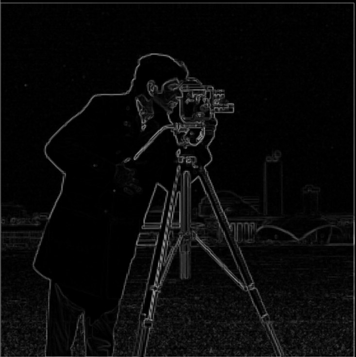
Gradient magnitude
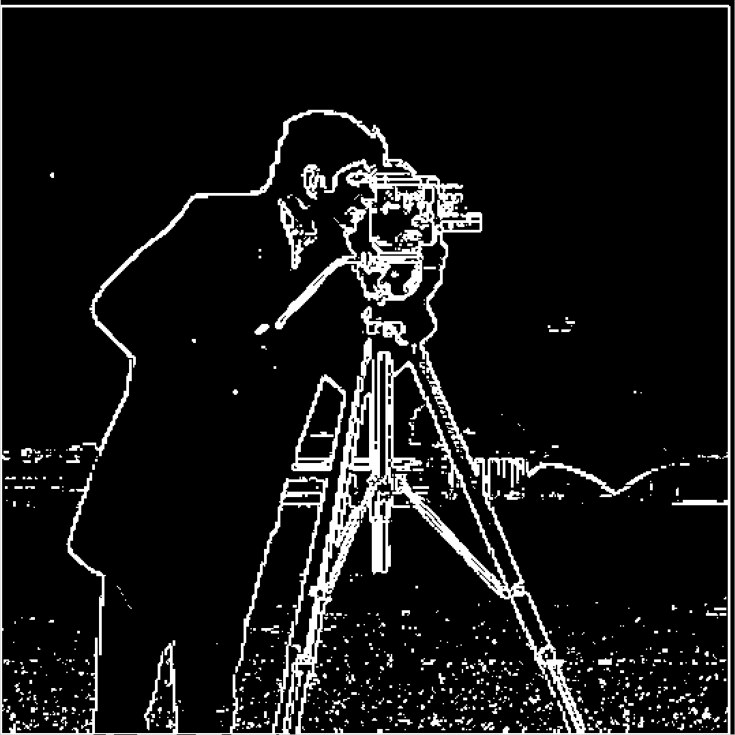
Edges, t = 0.17About 9.4% of pixels are marked as edges.
To get an edge image we set every pixel with magnitude above t to 1 and the rest to 0.
I tried a range of values and landed on t = 0.17.
Lower than that and the grass at the bottom turns into white speckle, since every blade is a tiny
brightness change. Higher than that and the tripod legs and the buildings in the back start breaking
apart. At 0.17 the cameraman, camera and tripod are fully outlined and the grass is mostly gone. Some
speckle is still there in the bottom left, which I took as the tradeoff for keeping the faint
background buildings.
PART 1 · 1.3
Derivative of Gaussian (DoG) filter
The finite difference result is noisy because Dx and Dy respond to every
single pixel change. So we blur first. The Gaussian is a 19 × 19 kernel with σ = 3, built as the outer
product of cv2.getGaussianKernel(19, 3) with itself.
g = cv2.getGaussianKernel(19, 3)
G = g @ g.T # 19x19 2D Gaussian
blurred = convolve2d(cameraman, G, mode='same')
DoGx = convolve2d(G, Dx) # 19x21
DoGy = convolve2d(G, Dy) # 21x19
Method 1 · blur, then differentiate
Blurred with G
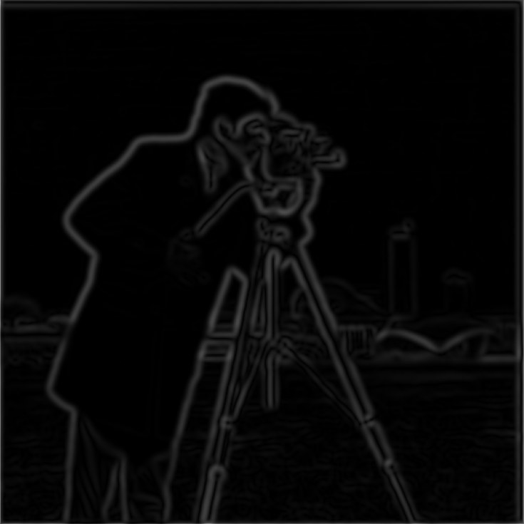
Gradient magnitudeMax drops from 1.41 to 0.68.
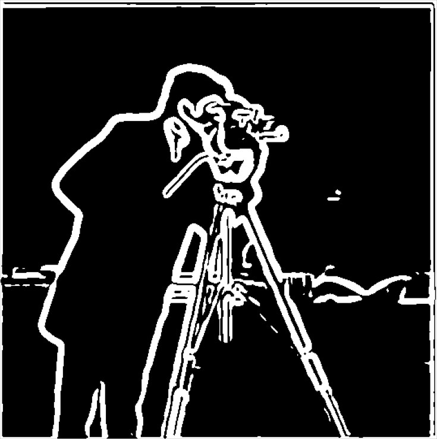
Edges, t = 0.05
Finite diffBlurred first
What changed (drag)
The differences:
The grass speckle is basically gone. The Gaussian averages out the tiny pixel to pixel changes before
the derivative ever sees them.
The edges are thicker and smoother. A sharp step becomes a ramp a few pixels wide, so the derivative
is nonzero over a wider band. The lines are also continuous instead of broken into dashes.
All the gradient values shrink, since blurring spreads each step out. That's why the threshold had
to drop from 0.17 to 0.05 to keep the same edges.
Very fine detail, like the thin lines on the camera, merges together. That's the cost of the blur.
Method 2 · one convolution with DoG
Convolution is associative, so (I * G) * Dx = I * (G * Dx). We can fold the blur and the
derivative into one filter and only touch the image once.
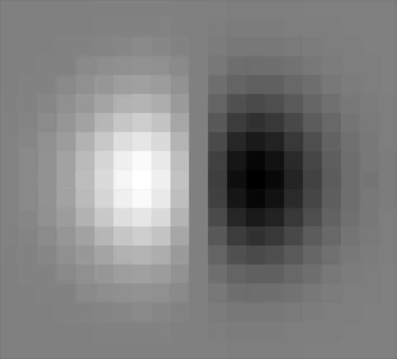
DoGx filterBright lobe on the left, dark lobe on the right.
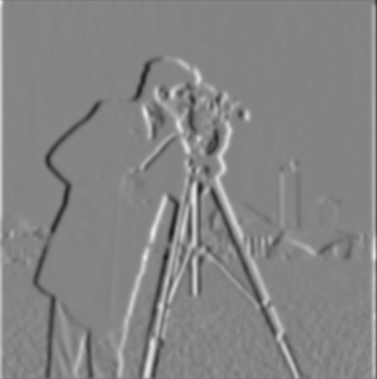
I * DoGx
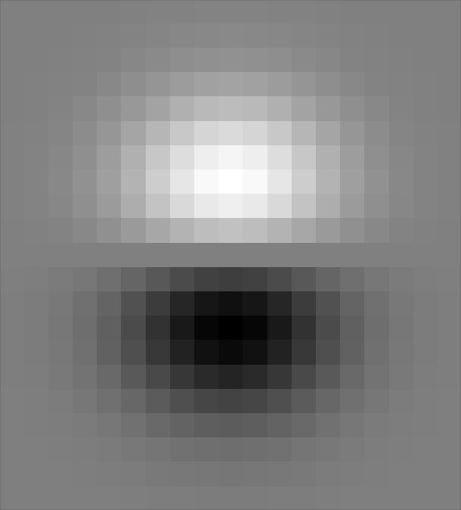
DoGy filterSame thing rotated 90°.
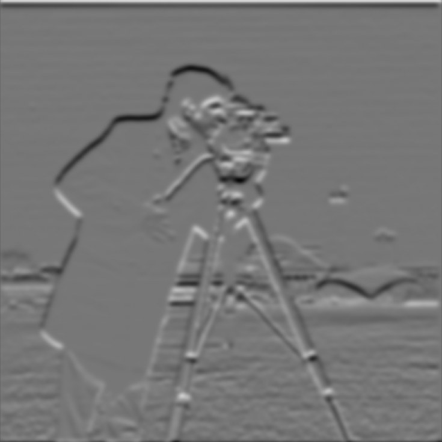
I * DoGy
Verification. Comparing I * DoGx with (I * G) * Dx, the full
L2 difference is about 11.9. All of that is on the outermost ring of pixels: with "same" mode, the
two step version zero pads the already blurred image, while DoG zero pads the original. Cropping one
pixel off each side, the difference is 1.4e−13 for x and 1.4e−13 for y, so they're the same image.
PART 2 · 2.1
Image "sharpening"
The Gaussian is a low pass filter, so I * G keeps only the low frequencies. Subtracting it
from the original leaves just the high frequencies (the edges and texture). An image looks sharper when
those are stronger, so we add them back with some weight α:
I + α(I − I * G) = I * ((1 + α)e − αG)
where e is the unit impulse (a kernel with a single 1 in the middle, so I * e = I).
That means the whole thing is one filter, the unsharp mask. I build it with
scipy.signal.unit_impulse((19,19), 'mid') and the same 19 × 19, σ = 3 Gaussian, and apply it to
each RGB channel separately.
def sharpen(image, a):
UnsharpMaskFilter = (1 + a) * IdentityKernel - a * GaussianFilter
r = fftconvolve(image[:,:,0], UnsharpMaskFilter, mode='same')
g = fftconvolve(image[:,:,1], UnsharpMaskFilter, mode='same')
b = fftconvolve(image[:,:,2], UnsharpMaskFilter, mode='same')
return np.stack([r, g, b], axis=2)
Taj Mahal
OriginalBlurred (low freq)I * G
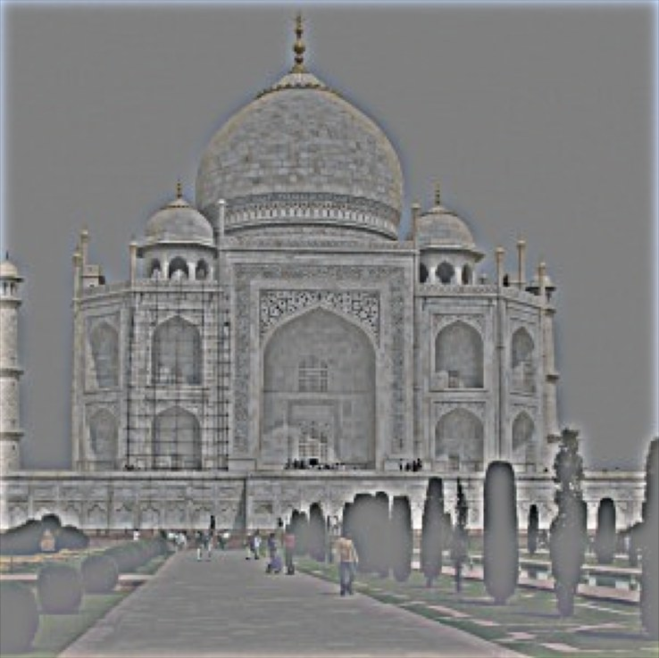
High frequenciesI − I * G, shifted by +0.5 so negatives show up.Sharpened, α = 1
Taj sharpened · α = 1
Varying α on the original. Up to about 2 or 3 it just looks crisper. Past 5 the white marble gets
dark halos along every edge and the sky starts to show noise, since we're amplifying everything above
the cutoff, including JPEG artifacts. α = 10 looks like an over-processed HDR photo.
Another image · Golik with pistachios
Original
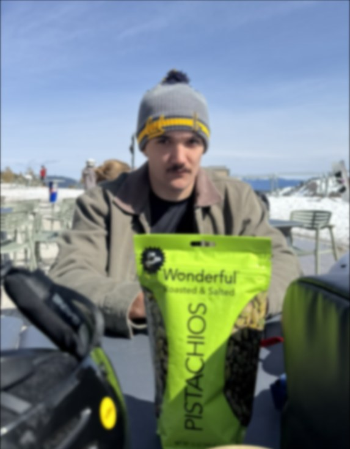
Blurred (low freq)
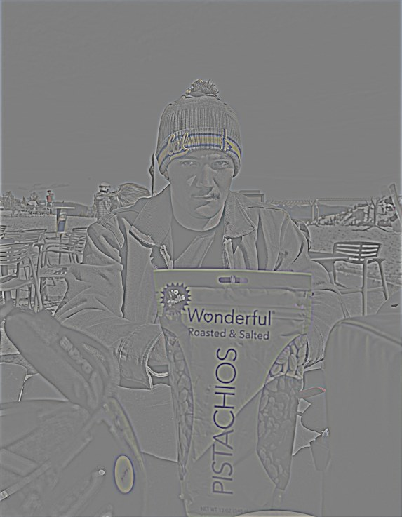
High frequencies+0.5 for display.
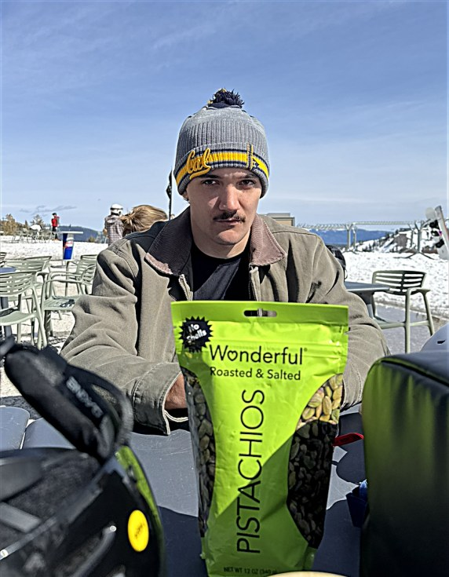
Sharpened, α = 1The text on the bag and the beanie knit pop the most.
Blur a sharp image, then try to sharpen it back
For evaluation, take the sharp original, blur it with G, and run the unsharp mask on the blurred one.
Drag to compare against the original.
OriginalBlur → sharpen
Taj, α = 1
OriginalBlur → sharpen
Golik, α = 1
Taj blurred, then α = 1
Golik blurred, then α = 1
Observation. Sharpening can't bring back what the blur removed. The Gaussian
attenuates the high frequencies a lot, and the unsharp mask can only scale up whatever is left. At α = 1
the blurred-then-sharpened image is still clearly softer than the original: the dome outline gets a bit
crisper, but the carvings on the marble and the letters on the pistachio bag don't come back. Pushing α
higher just makes the remaining mid frequencies louder, so edges get haloed while the fine detail is
still missing. Sharpening is really "boost the contrast of edges", not "undo blur".
PART 2 · 2.2
Hybrid images
From Oliva, Torralba and Schyns (SIGGRAPH 2006): up close, high frequencies dominate what you see, but
from far away only the low frequencies survive. So if you take the low
frequencies of one image and add the high frequencies of another,
the picture changes depending on how far you stand from it. A few things from the paper that guided my
choices: the two images need to be aligned so the shapes group together, and a good hybrid should look
unambiguous at each distance instead of like a double exposure.
H = I₁ * G₁ + I₂ * (e − G₂)
G₁ and G₂ are Gaussians with size 6σ + 1. The high pass is the impulse minus the Gaussian,
same idea as the unsharp mask. For a Gaussian with spatial σ (in pixels), the frequency response is
exp(−2π²σ²f²), which drops to one half at
Nutmeg, alignedClicked both eyes in each, then rotated and scaled.
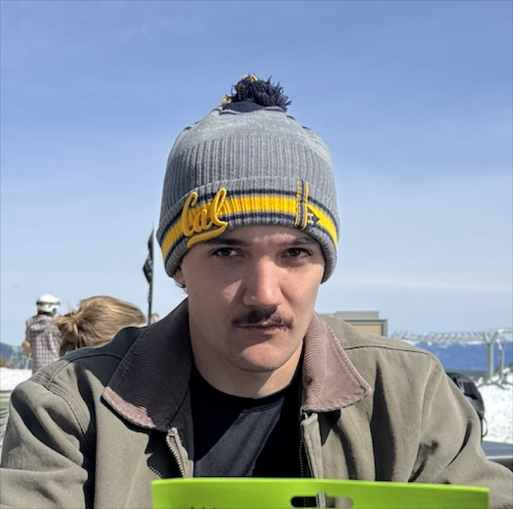
Golik, aligned
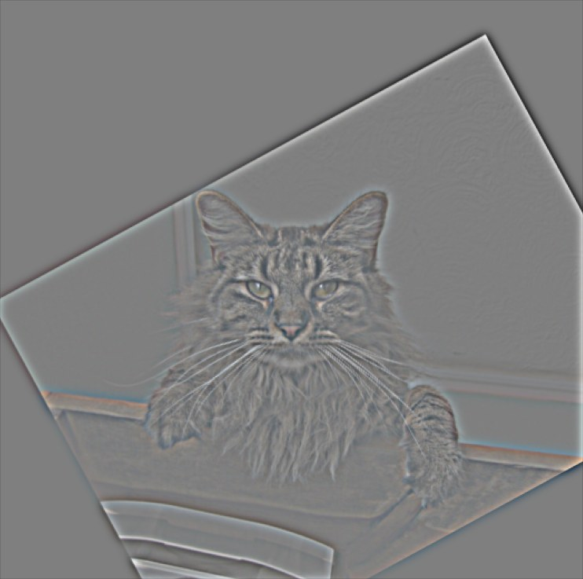
Nutmeg * (e − G₂), σ₂ = 4+0.5 for display. Whiskers, fur and eye outlines.
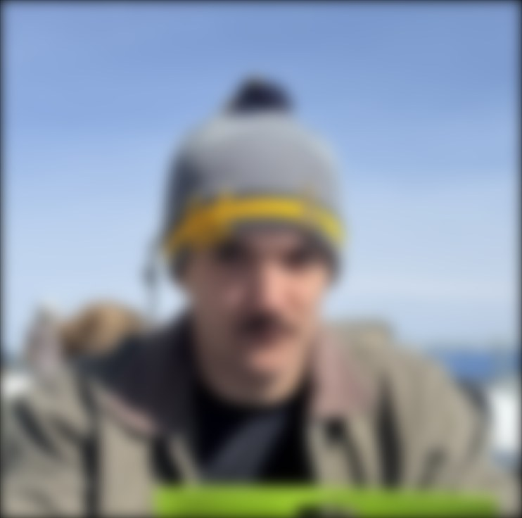
Golik * G₁, σ₁ = 7Just the face shape, beanie and colors.
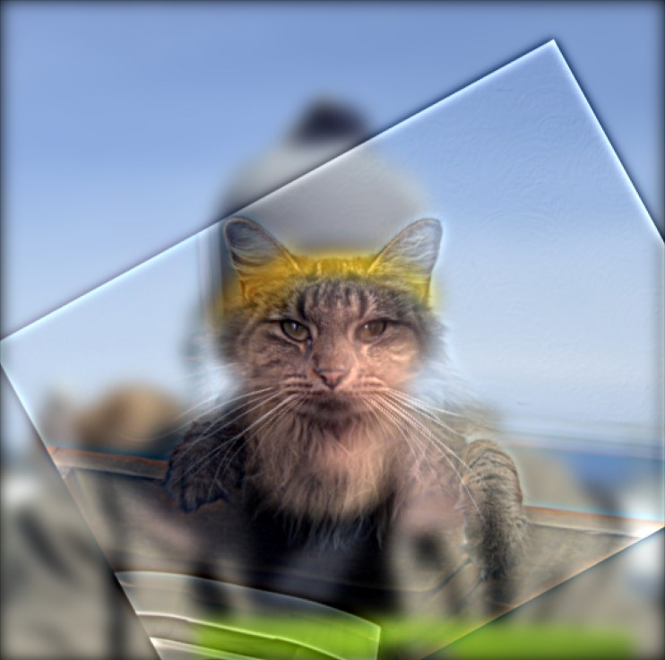
HybridSum, clipped to [0, 1].
Fourier transforms
Log magnitude of the 2D FFT of each image (converted to gray), with zero frequency shifted to the center.
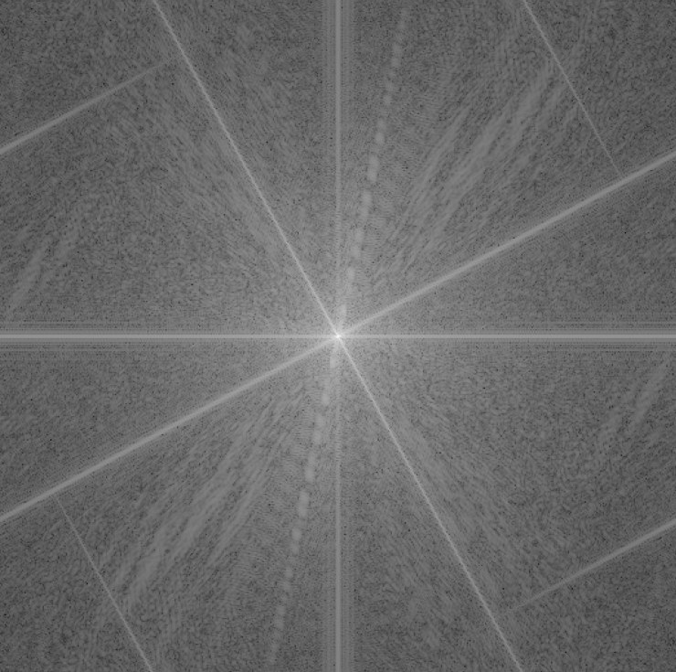
Nutmeg
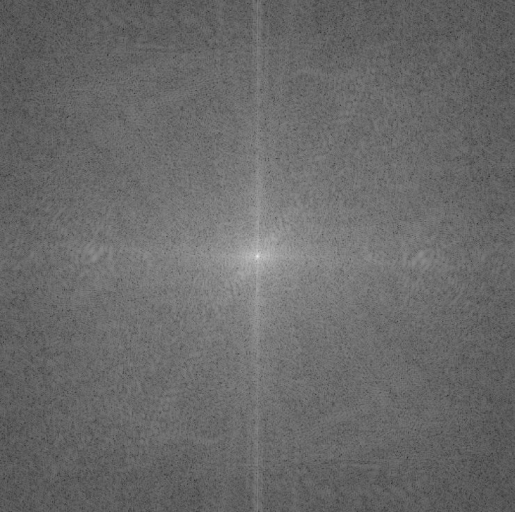
Golik
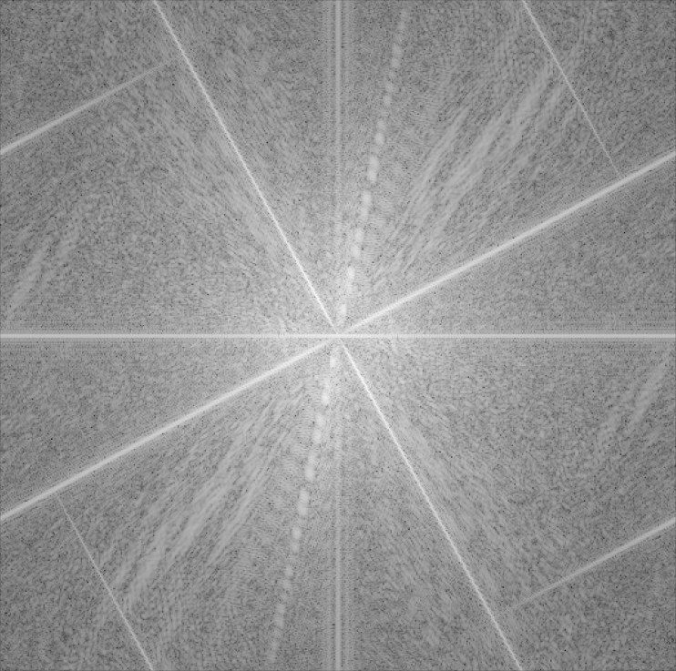
Nutmeg high passedCenter is dimmed.
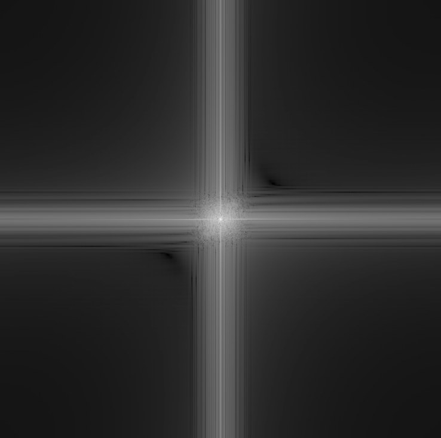
Golik low passedOnly a small bright blob near the center.
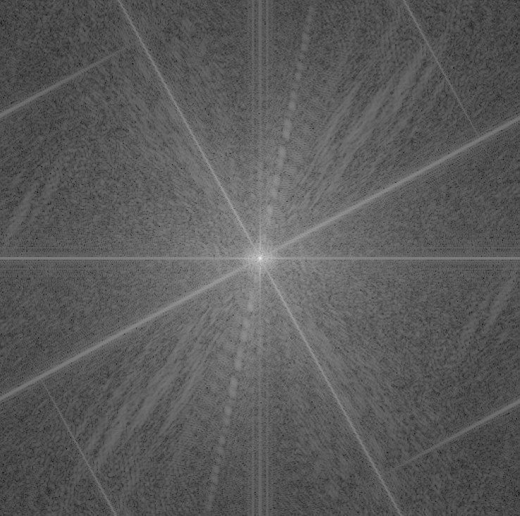
HybridGolik's center plus Nutmeg's outer ring.
The diagonal streaks in the Nutmeg spectra come from the hard black border that alignment added after
rotating the image. The low passed Golik spectrum falls off fast and has that cross shape from the
image borders, and in the hybrid you can see both: the bright core is Golik and everything further out
is Nutmeg.
Cutoff frequencies
Filter
σ (px)
Kernel
Half amplitude cutoff
Low pass on Golik
7
43 × 43
≈ 0.027 cycles/px
High pass on Nutmeg
4
25 × 25
≈ 0.047 cycles/px
The other two hybrids use σ = 13 for both filters. For this pair I picked the cutoffs separately. The low
pass at σ = 7 keeps enough of Golik's face shape and beanie that he still reads from far away, without
keeping so much detail that he competes with the cat up close. The high pass at σ = 4 means only the
sharpest detail of Nutmeg gets added (fur, whiskers, eye outlines), which is exactly the stuff that
disappears first when you step back. That leaves a gap between the two cutoffs, roughly 0.027 to 0.047
cycles/px, where neither image contributes much. The paper says to keep that gap small, so that's
something I'd tune further.
Try it · step back from the screen
Size · 100%
farclose
Shrinking the image does the same thing as walking away: the high frequencies get packed into too few
pixels for your eye to resolve, so only the low pass image is left.
Derek × Nutmeg
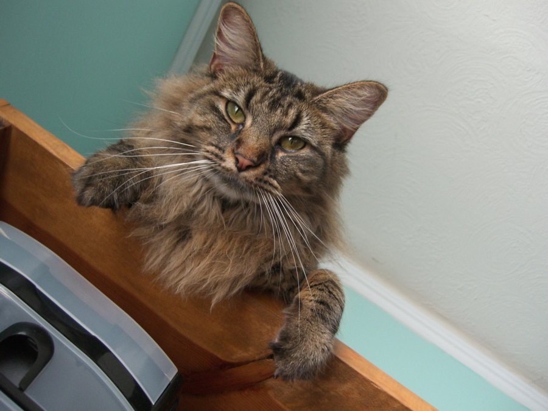
Nutmeghigh pass, σ = 13Dereklow pass, σ = 13
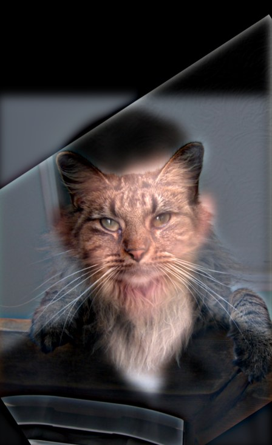
HybridDerek from far away, a whiskered Derek up close.
Race × Golik
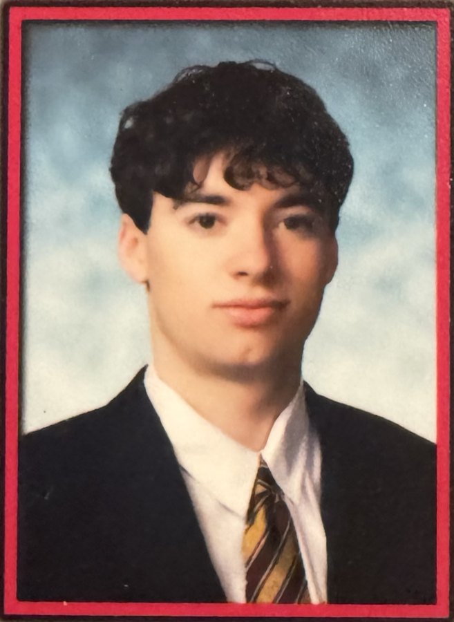
Racehigh pass, σ = 13Goliklow pass, σ = 13
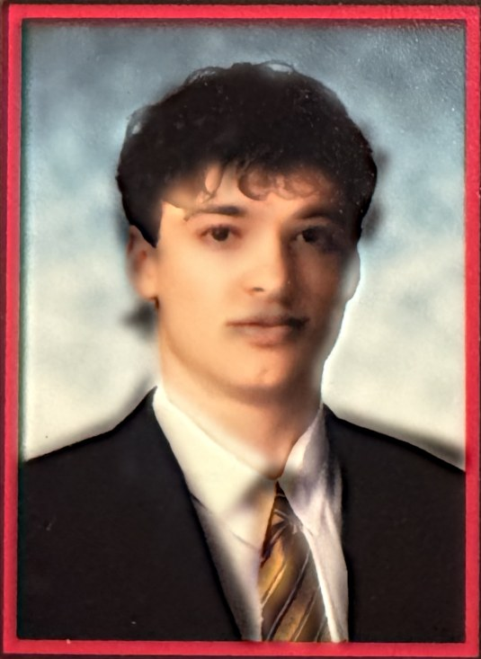
HybridTwo headshots with the same framing, so these lined up without any alignment, just a resize.
PART 2 · 2.3
Gaussian and Laplacian stacks
A stack is a pyramid without the downsampling, so every level stays the full image size. The Gaussian
stack blurs again at each level. The Laplacian stack is the difference between consecutive Gaussian
levels, so each level holds one band of frequencies: level 0 is the finest texture and the last level
is the leftover blurry color. Adding every Laplacian level back up gives the original image exactly.
No built-in pyramid functions.
def GaussianStack(image, levels=8):
stack = []
for level in range(levels):
stack.append(image)
image = blur(image) # 19x19, σ = 3, no downsamplereturn stack
def LaplacianStack(image, levels=8):
g = GaussianStack(image, levels)
stack = [g[i] - g[i+1] for i in range(levels-1)]
stack.append(g[-1]) # keep the last blur so the sum is exactreturn stack
Apple and orange, all 8 levels
Laplacian levels are normalized to [0, 1] for display, so gray means zero.
Apple GaussianApple LaplacianOrange GaussianOrange Laplacian
Figure 3.42, recreated
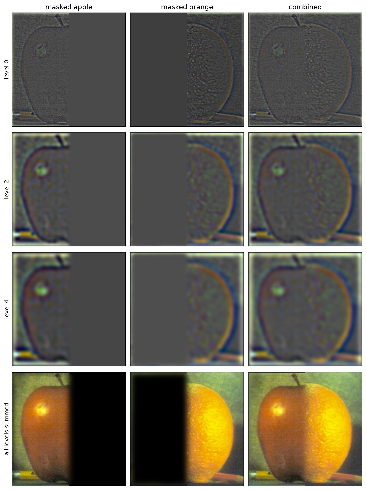
Szeliski Fig. 3.42 (a) to (l)
Rows 1 to 3 are Laplacian levels 0, 2 and 4. The left column is the apple's level times the mask's
Gaussian level, the middle is the orange's level times one minus that, and the right is their sum. The
last row adds up every level.
At level 0 the seam is basically a hard line since the mask has barely been blurred. By level 4 the
mask is soft, so the coarse color of the two fruits fades into each other over a wide band. That's the
whole trick: each frequency band gets a seam as wide as its features.
PART 2 · 2.4
Multiresolution blending
Following Burt and Adelson (1983), with stacks instead of pyramids. Build a Laplacian stack for both
images and a Gaussian stack for the mask, blend each level with its own mask, then sum the levels.
result = Σₖ Gₖ(M) · Lₖ(A) + (1 − Gₖ(M)) · Lₖ(B)
for level in range(levels):
current = MaskGaussian[level] * ALaplacian[level] + (1 - MaskGaussian[level]) * BLaplacian[level]
total += current
total = np.clip(total, 0, 1)
The oraple
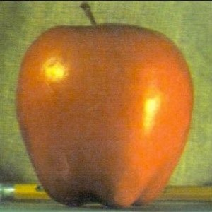
Apple
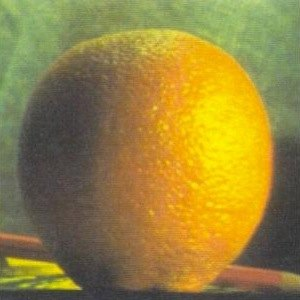
Orange
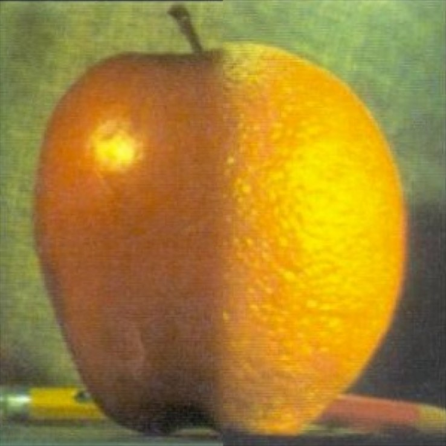
OrapleStep mask at the middle column, 8 levels.
Golik × Race · straight seam
GolikLeft side.RaceRight side.
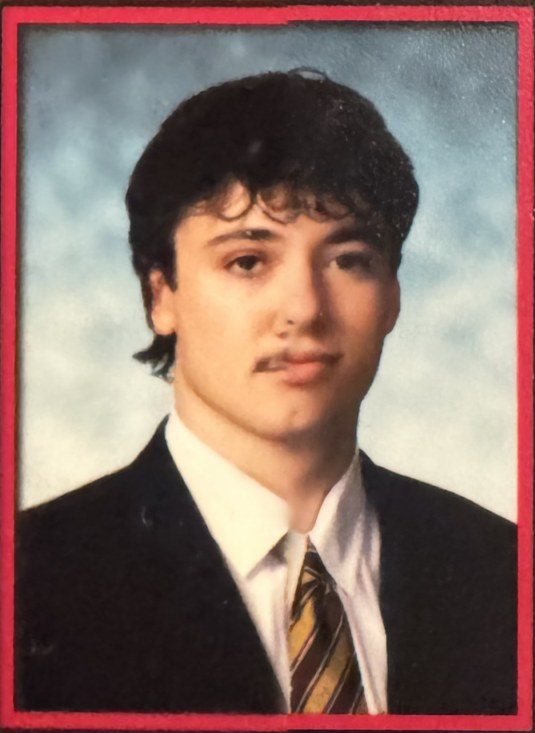
BlendSeam at column 600, 40 levels.
Two changes from the oraple. The seam is at column 600 instead of the middle of the image, because
that's where the center of the face is. And it uses 40 levels instead of 8. These photos are about 4x
wider than the apple, so with 8 levels of a σ = 3 blur the coarsest mask is still too narrow relative to
the face and you can see a seam in the skin tone. More levels lets the lowest band blend over a much
wider region.
Nutmeg on my face · irregular mask
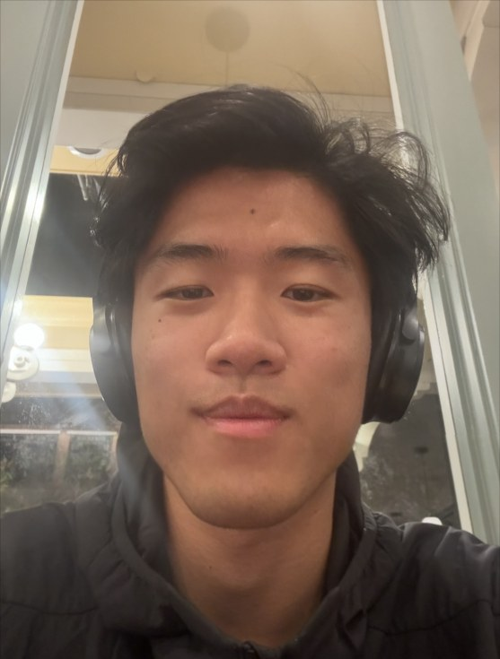
SelfieBackground, B.
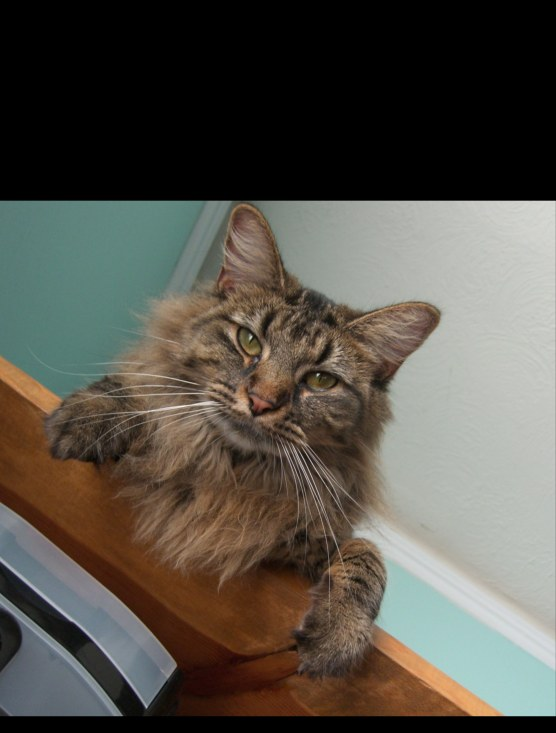
Nutmeg, shiftedForeground, A. Moved so the face centers line up.
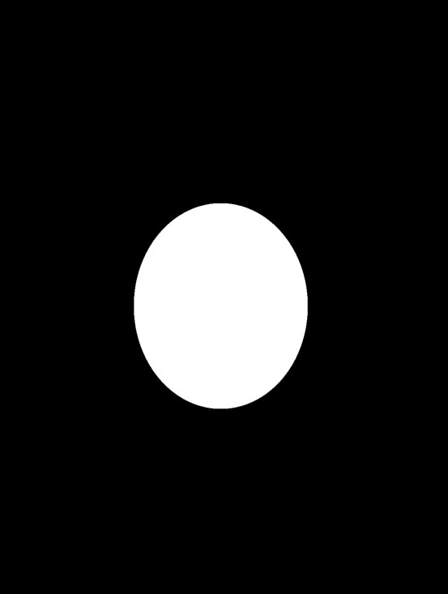
Mask, MEllipse, 220 × 260 px radii.
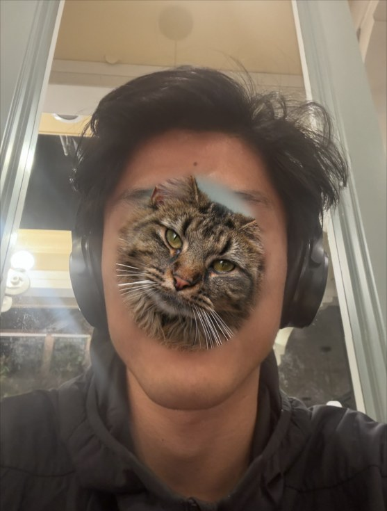
Blend40 levels.
I found the center of each face by eye, (563, 780) in the selfie and (654, 362) in the cat photo, and
shifted Nutmeg onto a black canvas the size of the selfie so those two points match. The mask is 1 inside
an ellipse around my face and 0 outside. Because the mask's Gaussian stack gets blurrier at every level,
the fur blends into my hair and skin gradually instead of having a hard oval cut out.
BeforeAfter
Before / after (drag)03
Most important thing I learned
Almost everything in this project is the same two filters. A Gaussian keeps the low frequencies, and
the impulse minus a Gaussian keeps the high ones. Edge detection, sharpening, hybrids and blending are
all just different ways of splitting an image into those bands and adding them back with different
weights. Thinking about images in terms of frequency instead of pixels made the hybrid and blending
results make sense. A seam looks bad because a hard edge has energy in every frequency, so the fix is to
give each band its own seam width.

 OriginalBlur → sharpen
OriginalBlur → sharpen